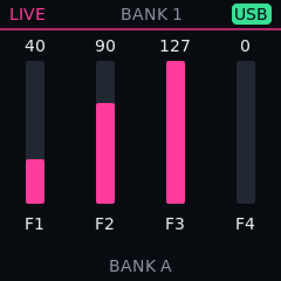
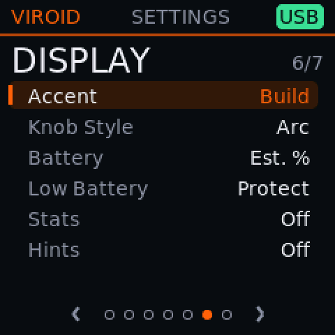

Make it yours
Everyone plays differently.
So the feel is a setting, not a decision made for you. Sensitivity, scan speed, curves, which knob does what, even the colours are yours to set.
What it does
- 1
Pad response Test build
Threshold, sensitivity and wait time, then a velocity curve: from light touch to hard hits.
- 2
Scan speed Test build
Choose how often the controls are read, from 8 to 24 kHz in half-kilohertz steps, or leave it on Auto. A lower setting asks the processor to read the controls less often.
- 3
Voice limit Test build
Set the most notes that may sound at once to match what your patches need.
- 4
Knob and velocity curves Test build
Shape how knobs respond and how key and pad velocity map to loudness.
- 5
Assign bank B Test build
Bank B knobs and faders can each edit any mixer, FX or synth parameter. Faders pick up smoothly, so nothing jumps.
- 6
Separate ports Test build
Present the keys and pads as separate MIDI ports, with a port of their own for DAW scripts.
- 7
Looks Test build
Accent colour, arc or classic knob style, pad LED brightness.
- 8
Preset editor Test build
Edit what every pad, knob, fader, wheel and button sends, in a browser page that replaces MIDI Suite.
On the screen




Stats for nerds
Averages from one unit and a test build; they differ from build to build and with what you play. Shown for the curious, not as promises.
- Cost of reading one input line, almost all of it waiting for the analog converter
- 28 µs per input lineBuild: 0.80.7 test · Source: docs/test-specs/CP10_scan_cost.md
- Key to MIDI event: typical, and slower than 99 events in 100
- 1.5 / 12 msBuild: 0.80.2 test, TI patch, screen updating · Source: docs/test-specs/CP5_scan_overlap.md